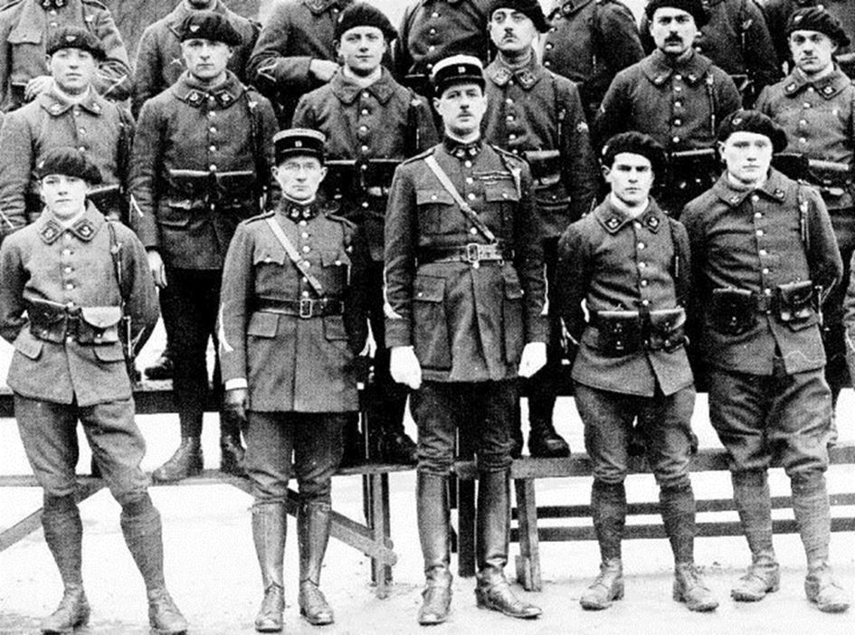

Le général de Gaulle (1890-1970) parmi les écrivains : La rédaction du premier tome des Mémoires de Guerre (partie 1)
par Frédéric SCHWINDT
« Il n’y a de querelle qui vaille que d’homme »
Tout un courant de la critique littéraire des années 1960 avançait qu’il n’était pas utile de connaître la vie d’un auteur pour étudier ses textes. Sans doute est-il utile de déconstruire les Mémoires du général De Gaulle afin de révéler leur idéologie interne, certains s’y sont essayés, mais ce ne sera pas notre approche. Historien, notre objectif est beaucoup plus prosaïque : replacer de manière classique le général de Gaulle dans son contexte. Mais voilà, il n’est pas qu’un écrivain ou un personnage historique, c’est aussi un mythe et souvent même une rue1... Ce qui complique sérieusement l’analyse.
Il y a quelques années, la décision de la commission des programmes de proposer le tome III des Mémoires de Guerre aux élèves de terminale fut en effet à l’origine d’une polémique certes pas très longue mais révélatrice du fait qu’il est encore difficile d’évoquer le sujet, seulement 42 ans après la mort du Général le 9 novembre 1970. Mais bon, lui-même a écrit que les seules querelles importantes sont celles qui placent l’homme au centre de la dispute.
Plutôt qu’un plan purement chronologique qui se contenterait de suivre le déroulé des Mémoires, il semble utile de procéder à quatre mises au point successives. Tout d’abord, pourquoi ne pas seulement essayer d’étiqueter de Gaulle en le situant par rapports aux autres écrivains et notamment ceux, hommes politiques ou non, qui ont fait œuvre de mémorialiste ? Lorsque de Gaulle est né, en 1890, radio, cinéma et télévision n’existaient pas. L’environnement culturel du tournant du nouveau siècle, radicalement différent de celui que nous connaissons, était cependant en plein renouvellement. Il faut donc rechercher les sources intellectuelles qui ont constitué la culture du général de Gaulle et les modèles qui l’ont forgé lui-même. Marqué par ce climat et un environnement familial qui plaçait justement la culture au-dessus de tout, le futur général a commencé à écrire dès le collège. Mais il s’est spécialisé dans le domaine de la littérature militaire.
Après la Première Guerre Mondiale, il acquiert même une certaine reconnaissance dans le milieu étroit de la stratégie et de la géopolitique. Lorsqu’il débute la rédaction des Mémoires de Guerre, en 1946, il est en revanche devenu une personnalité considérable qui continue de jouer un rôle majeur dans la vie politique du pays.
I – ETIQUETTER DE GAULLE
Avant les écrivains proprement dits, commençons par situer de Gaulle parmi les autres personnages historiques qui ont écrit et notamment les hommes d’Etat. La liste est bien sûr un peu arbitraire.
1 – Les Hommes Politiques qui écrivent leurs mémoires
Si on excepte Ramsès II (XIIIe siècle av. J.C.) et le récit de la bataille de Qadesh, le modèle des mémoires nous a été légué dès l’Antiquité par l’athénien Thucydide2 et sa Guerre du Péloponnèse (411 av. J.C.) puis par l’empereur Auguste et ses Res Gestae Divi Augusti (13 ap. J.C.).
Les Antiques
Ces textes étaient bien connus de De Gaulle, sans doute depuis l’adolescence, car ils les avaient étudiés à l’école. Les élèves devaient en effet les traduire à partir du grec et du latin et s’en imprégner comme d’un modèle. A un âge avancé, le Général en connaissait d’ailleurs encore par cœur de larges extraits. Même chose avec Saint-Augustin (mort en 430) même si ce n’était pas à proprement parler un homme politique. De Gaulle avait médité les Confessions de ce père de l’Eglise, un monument de l’antiquité tardive et un exemple pour tous les mémorialistes postérieurs3 (à commencer par Rousseau au XVIIIe siècle). Or, tous les trois ont vécu à un moment qui constitue une césure importante dans l’histoire de leur propre civilisation.
Thucydide avait occupé la charge de stratège, une fonction à la fois politique et militaire, et il avait connu la défaite. Ostracisé (exilé), il vit s’effondrer l’impérialisme athénien. Auguste avait quant à lui mis fin aux guerres civiles et fondé un nouveau régime : l’Empire romain.
Toute une partie de l’œuvre de Saint-Augustin est enfin une méditation sur le temps et sur l’histoire au moment où le christianisme prend son envol et que l’Empire romain d’occident entame sa dissolution. On comprend l’influence que ces trois personnages ont pu avoir sur l’homme du 18 juin puis sur le fondateur de la Ve République. En 1958, suite à la guerre d’Algérie, de Gaulle et la France doivent en effet affronter une IVe République bloquée ainsi que des menaces de coup d’Etat et de guerre civile.
Mais passons les siècles, laissons Charlemagne, Philippe Auguste et Saint-Louis, les rois et les empereurs qui étaient autrefois proposés comme référence tant à l’école laïque que dans les écoles catholiques. On aurait cependant pu évoquer, pour le Moyen Age, les grands chroniqueurs que sont le sire de Joinville (v. 1224-1317) ou Froissart (1333 – ap. 1400)4.
Les monstres sacrés : Napoléon – Louis XIV – Churchill.
Afin de s’inspirer du style, Stendhal affirmait qu’il lisait toujours quelques pages du Code Civil avant de se mettre à sa table de travail. Cette anecdote fait penser à Napoléon ou plutôt à Bonaparte qui a rédigé lui-même ou plutôt dicté – c’était sa manière de faire – des pans entiers du Code Civil. L’iconographie a conservé des images le montrant en train de tourner en rond dans son bureau des Tuileries pendant que quatre ou cinq secrétaires, debout devant des écritoires, notaient ses paroles sur plusieurs sujets différents en même temps. Dans les années 1670-80, Louis XIV (1638-1715) avait déjà procédé d’une manière équivalente pour donner un document excellent : les Mémoires à l’intention du Dauphin, une suite de conseils pour l’héritier du trône qui tourne à une réflexion sur le pouvoir.
Entre août 1944 et janvier 1946, période qui correspond peu ou prou au tome III des Mémoires de Guerre, Gaulle préside le gouvernement provisoire de la République Française. Il est revenu à Paris à la suite de la 2e DB du général Leclerc. Or, sa manière de travailler ne devait pas être très différente. En effet, il lui revenait de rétablir la légalité républicaine et d’empêcher la guerre civile tout en achevant la libération du territoire. Il fallait aussi remettre l’économie française en marche, nourrir 40 millions d’habitants et replacer la France à son rang dans les relations internationales… Vaste programme ! Or, au moment d’engager un secrétaire, il demande non pas un homme politique ou un technicien mais un normalien sachant écrire. On lui adresse Georges Pompidou (1912-1974), alors simple professeur de lettres et grand spécialiste de la poésie, qui deviendra à son tour, mais beaucoup plus tard, Premier Ministre (1961-1968) et Président de la République (1969-1974).
A la fin de sa vie, malade, Napoléon (1769-1821) dicta aussi un chef d’œuvre, le Mémorial de Sainte-Hélène, des mémoires en forme de testament politique, alors qu’il est lui-même prisonnier des anglais à 8000 kilomètres de la France et que son fils, le duc de Reichstag, est élevé chez l’ennemi, à la cour de Vienne. Napoléon aurait peut-être pu s’évader de Sainte-Hélène mais il a ouvertement préféré se concentrer sur sa postérité… En 1969, de Gaulle n’a pas besoin de s’évader mais il quitte volontairement le pouvoir après un référendum raté qu’il avait sciemment provoqué. Il a en réalité préparé sa sortie. Il craint la vieillesse qui est pour lui aussi une prison. Le fait de voir décliner, tant physiquement que moralement, son vieil ami / ennemi Churchill a sans doute également compté.
Churchill (1874-1965) et de Gaulle ont entretenu pendant trente ans une relation à la fois profonde et conflictuelle. Winston Churchill qui a dirigé le Royaume Uni durant la seconde guerre mondiale appartient quasiment à la même génération que de Gaulle et il est d’une stature équivalente, hormis l’attrait pour le whisky que le Général ne goûtait guère. Comme lui, c’était un grand orateur doué du sens de la formule qui fait mouche. De nombreux discours sont restés dans les mémoires. Par exemple, au début de la guerre, celui où il promet aux anglais « du sang et des larmes » et « au bout la Victoire » et l’autre, après le débarquement en Normandie, lorsqu’il affirme que cet évènement marque le commencement de la fin pour le régime nazi. Comme de Gaulle, Churchill a le sens de la durée. Contrairement à beaucoup d’autres hommes politiques, il ne se concentre pas seulement sur l’immédiat, même s’il a des affaires très graves et très difficiles à traiter dans le présent.
Il s’insère dans une passé déjà profond - France et Angleterre ne sont pas nées d’hier - et il se projette dans le futur. Le pays n’est donc pas envisagé par les deux mémorialistes seulement comme un territoire ou une entité politique mais aussi comme un être vivant qui possède un destin. On peut résumer le propos en disant qu’ils avaient un certain sens de l’Histoire.
Ils publient leurs mémoires au même moment et en France chez le même éditeur : Plon. Ils ne procèdent en revanche pas du tout de la même manière. De Gaulle rédige trois tomes finalement assez courts (complétés par une grande quantité de documents ajoutés en annexe) alors que Churchill livre une véritable somme. Evincé du gouvernement après les élections de 1945, il doit gagner sa vie et il trouve en effet plus profitable d’allonger et d’étaler la parution de ses mémoires dans le temps. Confronté au même problème, de Gaulle décide quant à lui de réduire son train de vie. Il refuse également une reconstitution de carrière (l’élévation au rang de général d’armée : 5 étoiles) ce qui lui aurait permis d’augmenter sa pension… Enfin, la manière de travailler est très différente. De Gaulle écrit seul alors que Churchill dirige un travail d’équipe… Il n’a écrit personnellement que le premier tome, très bon d’ailleurs, sur sa jeunesse et sa participation à la guerre des Boers au début du XXe siècle en Afrique du Sud.
De Gaulle en revanche n’évoque jamais ce qui lui est personnel et notamment son enfance ou ses combats de 1914-1916. En 1953, Churchill obtient en revanche le prix Nobel de littérature pour ses mémoires.
Les tentations du mémorialiste
La comparaison de Gaulle / Churchill pose finalement assez bien les pièges qui guettent les mémoires des hommes politiques : le problème de l’argent lorsqu’ils ont quitté les affaires et celui des nègres, c’est-à-dire des auteurs qui sont embauchés pour se glisser dans la peau du mémorialiste en titre. Certains ont le talent de savoir s’entourer et l’honnêteté de le reconnaître. L’ancien président de la République Jacques Chirac (1995-2007) a ainsi publié une dizaine d’ouvrages et deux tomes de mémoire, qui ont constitué un très gros succès de librairie, sans jamais avoir écrit une seule ligne. Mais il n’a jamais feint d’en être le véritable auteur et il a toujours laissé filtrer le nom des véritables rédacteurs.
Aux Etats-Unis, publier des mémoires est enfin quasiment une obligation puisque les présidents finissent très souvent leur mandat ruiné… C’était le cas d’Ulysse Grant (1822-1885), un des chefs de l’armée nordiste pendant la guerre de sécession, devenu chef de l’Etat à la fin des années 1860, et qui le premier s’est mis à écrire pour nourrir sa famille. Bill Clinton (1992-2000), quant à lui, a publié ses mémoires et assuré des tournées de conférences à 100 000 dollars la soirée afin de solder ses dettes et de payer ses avocats. Dans le cas d’Ulysse Grant et de Georges W. Bush (2000-2008), le livre avait aussi permis de défendre un bilan politique sommes toutes très contrasté.
Le problème se pose de manière très crue pour ceux qui ambitionnent d’entrer à l’Académie Française mais qui n’ont matériellement pas le temps d’écrire parce qu’ils sont absorbés par les charges gouvernementales. Il leur faut malgré tout sortir quelques textes de circonstances afin d’appuyer leur candidature. Or, Raymond Poincaré (1860-1934), président de la République durant la Grande Guerre, s’est attaqué à ses mémoires longtemps après son entrée chez les Immortels. Avant, il s’est contenté de demander à son ancien directeur de cabinet, lorsqu’il était ministre des finances et ce qui est moins connu ministre de la culture (on plutôt des beaux-arts comme ont disait à l’époque), de regrouper ses discours en plusieurs volumes.
Une dernière catégorie concerne des hommes politiques devenus mémorialistes malgré eux parce que leur journal, un texte à usage personnel, est devenu par la suite une mine d’informations pour les historiens. Le journal de Vincent Auriol, premier président de la IVe République (1946-1953) et contemporain de De Gaulle, fourmille de détails. Comme il n’était pas au départ destiné à être publié et qu’il a été écrit à chaud, sur le coup de l’évènement, il ne contient donc ni autocensure, ni réécriture.
Nègre pour Pétain
En 1929, le maréchal Pétain (1856-1961) veut lui aussi entrer à l’Académie Française où siégeait déjà son ennemi, le maréchal Foch. Mais contrairement à Foch qui a publié pendant quarante ans de nombreuses études militaires, Pétain n’est pas très porté sur l’écrit. Il prend donc à son cabinet de jeunes officiers brillants dont il apprécie la plume pour qu’ils puissent produire à la chaîne les textes exigés. Parmi eux, il y a de Gaulle dont Pétain suit la carrière depuis sa sortie de Saint-Cyr en 1912.
A cette époque, le lieutenant de Gaulle avait en effet été affecté au régiment d’infanterie d’Arras, dans le nord de la France, que commandait alors le colonel Pétain. La rupture interviendra néanmoins lorsque le maréchal voudra sortir sous son nom une histoire du soldat français que de Gaulle est en train de rédiger… C’est très réducteur en matière d’explication historique mais imaginons un instant que l’appel du 18 juin se soit réduit à une simple querelle d’égo.
Autrefois, le cursus des hommes politiques était essentiellement littéraire ou juridique, souvent les deux à la fois comme dans le cas de François Mitterrand (1916-1996) qui détenait une licence de lettres, une licence de droit et un diplôme de sciences politiques. Ceci explique qu’ils avaient une très large et très profonde culture, un goût réel pour l’écriture et parfois un véritable talent. Dans tous les pays occidentaux, la formation des hommes politiques fait aujourd’hui la part belle à l’économie, à la technique administrative et surtout à la communication. Comme pour chacun d’entre nous, cette évolution risque de provoquer une véritable rupture avec l’écrit au point que certains se vantent (de manière feinte pour Jacques Chirac ou réelle pour Nicolas Sarkozy) de n’avoir aucune culture voire de mépriser la langue ou la littérature.
2 – Les écrivains qui font de la politique
Si des hommes d’Etat ont écrit, des écrivains ont aussi tenté une carrière politique. Ils sont même très nombreux au XIXe siècle.
Les grands du XIXe siècle
Pour de Gaulle, né en 1890, ce sont presque encore des contemporains. Quelques années auparavant, les obsèques nationales de Victor Hugo (1802-1885) ont profondément marqué les contemporains notamment l’écrivain Maurice Barrès, qui n’était pourtant pas du même bord politique que lui. Certains ont été encensés par les autorités. Hugo, par exemple, est nommé pair de France par Charles X et il le reste sous la Monarchie de Juillet (en changeant au passage d’affiliation politique : d’abord royaliste légitimiste puis Orléaniste, il finira républicain). Ce n’est pourtant pas qu’une fonction honorifique. Au « Sénat », l’auteur de « Notre-Dame de Paris » joue un rôle important dans le développement des lois sociales, notamment contre le travail des enfants et en faveur de l’éducation. Châteaubriant (1768-1848), dont les « Mémoires d’Outre-tombe » furent méditées par de Gaulle, est ministre des affaires étrangères au début de la Restauration et il rêve de devenir le premier ministre de Louis XVIII. Stendhal (1783-1842) entame aussi une carrière de diplomate après avoir raflé des dizaines d’œuvres d’arts en Italie au profit de Napoléon et des musées français.
D’autres auteurs, parfois les mêmes, ont eu maille à partir avec les autorités : Jules Vallès (1832-1885) au moment de la Commune de Paris (1871) ou Emile Zola (1840-1902) au moment de l’Affaire Dreyfus. Or, cette affaire a fortement marqué la famille de Gaulle. Mais la meilleure comparaison possible reste encore avec Victor Hugo qui rompt avec Napoléon III après le coup d’Etat du 2 décembre 1851 et contre lequel il écrit un pamphlet : « Napoléon le Petit ». Hugo s’exile à Jersey puis à Guernesey d’où il attend pendant dix-huit ans la chute du Second Empire. De Gaulle rompant lui aussi avec le devoir d’obéissance quitte la France pour l’Angleterre le 17 juin 1940 et, le jour suivant, il lance depuis la BBC son appel à la résistance. Au moment de son retour au pouvoir en 1958, après les évènements d’Algérie, peut-être a-t-il pensé à ne pas devenir un Napoléon-le-Petit… De la même manière, dès les premières lignes des Mémoires, la réflexion gaullienne sur les racines de la France et son destin fait écho à la partie épique de l’œuvre d’Hugo, « La légende des siècles » par exemple.
Le baron Alexis de Tocqueville (1805-1859) occupe une place à part. Ministre des affaires étrangères de la IIe République et un de ceux qui ont rédigés sa constitution, ce n’est pas un romancier mais le fondateur de la sociologie politique, avec des ouvrages comme « De la démocratie en Amérique », à une époque où des textes techniques pouvaient aussi être de grands textes littéraires. Ecrivain militaire, de Gaulle avait sous les yeux un exemple très exigeant.
Les grands serviteurs de l’Etat
Jean Anouilh (1910-1987) Après les écrivains qui ajoutent à leur carrière dans les lettres des fonctions de ministres ou de parlementaires, viennent les hauts fonctionnaires. Suite aux exemples fameux de Châteaubriant et de Stendhal, être diplomate et écrire fut même longtemps une tradition, presqu’un lieu commun. Le dramaturge Jean Anouilh a été responsable de la propagande, c’est-à-dire de la communication gouvernementale, au début de la Seconde Guerre Mondiale. Or, sa pièce « Antigone », inspirée de Sophocle, pose justement le problème du conflit entre le devoir et la conscience, dilemme qui emplit de Gaulle au moment de rompre en 1940, lui qui connaît par cœur des passages entiers de Sophocle (Ve siècle avant J.C.) ou de Racine (1639-1699) sur des thèmes voisins…
Le poète Saint-John Perse (Alexis Léger – 1887-1975), secrétaire général du ministère des affaires étrangères, fut quand à lui un opposant. Parti en Amérique, mais encore assez proche de Vichy, il passa toute la guerre à prévenir l’administration Roosevelt contre le chef de la France Libre. En revanche, une admiration réciproque lia dès cette époque l’auteur de théâtre Paul Claudel (1868-1955) et de Gaulle.
Naissance des intellectuels
L’enfance de Charles de Gaulle s’est déroulée à une époque très importante. Les années 1890-1905, celles de l’Affaire Dreyfus, voient en effet apparaître une figure nouvelle dans l’opinion publique : l’intellectuel (une personne vivant de sa plume et qui s’engage dans le débat public). Rappelons le contexte. En 1894, un officier juif (et alsacien) est accusé de haute trahison au profit de l’Allemagne et il est condamné au bagne. Quelques années plus tard, on apprend qu’il était innocent mais l’armée, soutenue par le gouvernement, refuse de revenir sur la condamnation. Il s’ensuit une crise politique terrible et la division du pays et du paysage culturel en deux camps : dreyfusards contre antidreyfusards. La crise culmine avec la publication dans le journal de Clemenceau d’un éditorial d’Emile Zola intitulé « J’accuse ! » (13 janvier 1898) qui vaudra à celui-ci une condamnation, un exil et plus tard un assassinat politique. Le père de Gaulle, professeur catholique et royaliste légitimiste, choisit pourtant sans hésiter le camp dreyfusard. C’est le déclic qui a conditionné beaucoup des engagements futurs du Général et son admiration profonde pour des écrivains dreyfusards comme Charles Péguy et la Revue Blanche5.
De Gaulle est-il donc un intellectuel ? Sans aucun doute dans les années 1930 mais dans son domaine de prédilection de la pensée militaire. A cette époque, il approche en effet le monde politique afin de le convaincre de la nécessité de doter la France d’une force blindée, en dépassant la limite traditionnelle du devoir de réserve, ce qui lui vaudra d’ailleurs un ralentissement de sa carrière. Cette imprégnation de jeunesse explique en tout cas le bon accueil fait à René Cassin (1887-1976), futur prix Nobel de la paix, qui se présente à de Gaulle à Londres en 1940 « comme un vieux professeur juif et de gauche ».
La figure de l’écrivain engagé a donc fortement marqué de Gaulle. De la vient aussi la longue amitié avec André Malraux (1901-1976) qui sera longtemps ministre à ses côtés. Malraux qui a commencé sa carrière à gauche, dans la dénonciation du colonialisme et du fascisme, a définitivement trouvé en lui sa figure tutélaire. Certes, le romancier a servi dans les brigades internationales au cours de la guerre d’Espagne puis il a constitué, en 1944, la célèbre brigade Malraux qui combat courageusement pour la libération des Vosges et de l’Alsace. Mais il y a aussi chez lui un côté affabulateur. Ses « Anti-Mémoires » sont d’ailleurs de manière assumées des mémoires réinventées. A la fin de sa vie, Malraux est même une des rares personnalités que de Gaulle reçoit encore à Colombey et il fait de ses entretiens ré-imaginés une œuvre magnifique : « Les chênes qu’on abat ».
André Malraux
Il faut enfin évoquer les salauds. Le talent voire même le génie ne protège pas des mauvais choix et de la fascination pour le mal. Certains des plus grands écrivains français des années 1930 ont choisi Vichy et la collaboration : Céline (1894-1961), l’auteur du « Voyage au bout de la nuit » qui était un antisémite fanatique, Drieu la Rochelle (1893-1945) et même Ramon Fernandez (1894-1944)6, le plus grand critique littéraire de l’époque. Lorsqu’il était au pouvoir, De Gaulle a toujours refusé qu’on fasse des ennuis aux écrivains qui s’opposaient à lui ; Sartre par exemple en qui il voyait une sorte de Voltaire moderne. Mais dans le cas du journaliste et écrivain Robert Brasillach (1909-1945), condamné à mort à la Libération, il s’agissait d’un tout autre problème. De nombreux auteurs, de tous les bords politiques et mêmes des résistants étaient pourtant intervenus auprès de De Gaulle afin d’obtenir sa grâce, au prétexte que Brasillach n’aurait pas eu de sang sur les mains. Admirateur du nazisme, il avait pourtant écrit, au sujet de la déportation des juifs, qu’il fallait « commencer par les petits ». Logique, de Gaulle considère que le talent éventuel n’empêche pas de devoir répondre de ses actes. Condamné à mort par Vichy, nul doute que De Gaulle aurait d’ailleurs lui-même été exécuté.
3 – Les militaires écrivains. Un technicien ?
Donc Charles de Gaulle est un homme politique qui rédige des mémoires et c’est un intellectuel marqué par l’extraordinaire richesse littéraire de son époque. Mais c’est d’abord un militaire qui écrit, sujet facile à plaisanterie puisqu’on à parfois du mal à associer talent et uniforme. C’est oublier les précédents. Au XVIIIe siècle, Choderlos de Laclos (1741-1803), l’auteur « Des liaisons dangereuses », était lui-même un officier du roi. A l’inverse, son ami le chevalier de Saint-Georges, le Mozart noir, fut fait général sous la Révolution, comme les pères de Victor Hugo et d’Alexandre Dumas (1802-1870). Un peu plus tard, Alfred de Vigny (1797-1863), un contemporain de Victor Hugo dans le courant romantique, avait débuté sa carrière par un ouvrage intitulé « Servitude et Grandeur de la Condition Militaire ».
Mais de Gaulle n’est pas un auteur de fiction, encore moins un romancier. Il a connu l’expérience du feu mais il n’écrit pas les « Croix de bois » (Dorgelès – 1885-1963) ou « Orages d’acier » (Ernst Jünger – 1895-1996), deux des grands bestsellers de l’entre deux guerres en France et en Allemagne et il ne raconte pas ses souvenirs de combat comme Maurice Genevoix (1890-1880). Les horreurs vécues au front ne le pousseront pas vers les nouvelles frontières de l’imaginaire à l’image des Surréalistes. Non, c’est d’abord un technicien qui publie des études en même temps qu’il rédige des rapports pour l’Etat Major, ce qui lui vaut d’ailleurs à la fois des jalousies et des moqueries dans le petit monde de la technocratie militaire. Il faut savoir que les stratèges ne font pas carrière. Ils sont estimés ou ils sont combattus mais ils ne montent pas très haut dans la hiérarchie militaire, à l’exception notable du maréchal Foch. De Gaulle a en tête des auteurs, comme le français Ardant le Picq (1821-1870), qui insistent tous sur le fait que rien n’est assuré à la guerre et que le chef se doit de réagir avec pragmatisme à l’évènement7. Il a aussi un modèle : le lieutenant-colonel Mayer (1851-1938)8, un officier juif, plutôt de gauche, admirateur de Jaurès et aux idées stratégiques hétérodoxes. Il devient son ami et fait auprès de lui ses premières armes en publiant des articles dans des revues spécialisées.
Un autre auteur l’a profondément marqué mais d’une manière indirecte, le lieutenant-colonel Driant (1855-1916). Officier brillant mais dont la carrière a été brisée, il était le gendre du général Boulanger, Emile Driant s’est reconverti dans la politique, comme député de Nancy, et dans la littérature en prenant la succession de Jules Verne avec des romans qui mêlent au thème de la guerre future, anticipation technologique et prospective géopolitique. Pour l’anecdote, il publie en 1910 un roman où il prévoit une guerre entre Japonais et Américains dans le Pacifique et une importante bataille navale et aérienne autour de l’île de Midway… Comme de Gaulle qui se passionne après guerre pour les chars, Driant, même rendu à la vie civile, est resté proche de ces officiers comme le commandant Ferrier qui expérimentent l’aérostation, l’aviation ou la TSF (télégraphie sans fil = la radio).
Or, le hasard veut que Driant soit tué au bois des Caures, à la tête de ses chasseurs, lors du déclenchement de l’attaque des Allemands sur Verdun en février 1916, quelques semaines seulement avant que de Gaulle ne soit lui-même porté disparu, à quelques kilomètres de là, lorsque sa compagnie est décimée à côté du fort de Douaumont.
Le général Lyautey (1854-1934), futur maréchal, auteur en 1891 d’un essai remarqué : « Le rôle social de l’officier », a impressionné toute la génération d’officiers à laquelle de Gaulle appartient. C’est un lorrain rallié par la force des choses à la République qui, à l’inverse de la tendance du corps des officiers et de son milieu d’origine, veut à l’époque ouvrir l’armée sur la société. Jeune lieutenant en 1912, De Gaulle a en tête les préceptes de Lyautey lorsqu’il est placé à la tête d’une section d’appelé du régiment d’Arras. Après la Première Guerre Mondiale, de Gaulle qui est un fantassin, découvre le général Estienne. Ce meusien natif des Hauts-de-Chée, qui a fait sa classe préparatoire au lycée de Bar-le-Duc, est en effet le père des chars de combat.
Après avoir publié de nombreux articles dans des revues spécialisées, de Gaulle devient professeur d’histoire à Saint-Cyr (l’école était à cette époque en région parisienne), puis conférencier à l’école de guerre (à l’école militaire en face de la tour Eiffel). Or, après la couverture des frontières, le rôle du chef, la question psychologique dans la conduite de la guerre ou la mobilisation économique, il engage justement au début des années 1930 une réflexion sur l’arme blindée en totale rupture avec la pensée stratégique dominante en France. Beaucoup plus tard, il élargira cette réflexion à la force de frappe (l’arme nucléaire et la dissuasion). L’idée est toujours la même. Comment transformer le territoire national en un sanctuaire que les fortifications placées aux frontières, la ligne Maginot ou l’armée conventionnelle ne peuvent plus protéger ? Dans le contexte de la guerre froide, de Gaulle, premier président de la Ve République (1958-1969), insistera avec force sur le thème de l’indépendance nationale et sur la nécessité pour le pays de se doter de l’arme nucléaire afin de se protéger de l’Union Soviétique et d’être en même temps autonome par rapport aux Etats-Unis9. Donc, au moment où il rédige ses mémoires, de Gaulle est resté un écrivain militaire qui continue de réfléchir aux problèmes stratégiques de son temps avec son ministre des armées Pierre Messmer (1916-2007). Son attention va jusqu’aux détails. Par exemple, il a écrit lui-même la plus grande partie de l’ordonnance (une loi) de 1959 qui organise la défense nationale comme un système global qui associe défense militaire, défense civile et défense économique – ce qui était très nouveau pour l’époque - mais aussi le RDGA, le règlement de discipline valable au sein des armées.
Quand il écrit, de Gaulle raconte une défaite qu’il avait largement prophétisée. Ses mémoires constituent donc aussi une justification de la politique qu’il compte conduire afin de protéger la France d’une nouvelle surprise stratégique. En tout état de cause, après l’exemple de Clemenceau (1841-1929) en 1917, il rompt une digue officieuse qui séparait hommes politiques et généraux et qui affectait à chacun un rôle autonome. Loin de placer le gouvernement sous la coupe des militaires, il considère (mais c’était déjà l’idée de Clausewitz) que c’est aux politiques d’exercer leurs responsabilité en conduisant une réelle politique de la guerre.
Si de Gaulle est resté longtemps un auteur militaire, ses lectures et ses centres d’intérêts vont bien au-delà. Mieux, lorsqu’il analyse tel cadre stratégique ou tel commandant en chef, il s’intéresse tout autant aux faits objectifs : la géographie, les forces en présence, qu’à la psychologie des acteurs. Quand il affirme que « la culture générale est la véritable école de commandement » ou qu’au « fond des victoires d’Alexandre, on retrouve toujours Aristote », il prône l’acquisition par les officiers, mais aussi de tout responsable public, d’une culture la plus large possible. Seule cette culture permettra selon lui aux chefs de rompre avec les pesanteurs et le dogmatisme afin de s’adapter aux réalités. Pour lui, il n’y en effet pas d’autre politique possible que celle qui fait face aux réalités. Voilà pourquoi d’ailleurs le gaullisme n’est pas une idéologie ! Ce n’est peut-être pas un hasard si cette conception a été reprise en 1945 pour poser le cadre de la formation des hauts fonctionnaires français avec la création par un de ses proches, Michel Debré (1912-1996), futur premier ministre en 1959, de l’Ecole Nationale d’Administration.
F.S.
Seconde partie dans le numéro de janvier 2017.
1Philippe Oulmont (dir.), Les voies De Gaulle en France, Préface de Jean-Pierre Rioux, Cahiers de la Fondation Charles De Gaulle N°17, 2009.
2Même si Thucydide ne se raconte pas lui-même.
3Voir aussi de cet auteur La cité de Dieu qui donne lieu à une profonde réflexion sur le sens de l’Histoire.
4Il faudrait au passage essayer de distinguer un mémorialiste et un chroniqueur, ce que les dictionnaires ne font pas toujours.
5A la même époque, le futur général Weygand, alors jeune officier, faisait signer une pétition contre Dreyfus…
6Voir le livre consacré à son père par le grand romancier Dominique Fernandez, « Ramon », Le Livre de Poche, 2010.
7Son idée maîtresse consiste à démontrer que le combat repose avant tout sur l’être humain et notamment sur sa psychologie. De Gaulle a en revanche lu assez tard le grand théoricien prussien Clausewitz (1780-1831).
8À partir de 1889, il se mit à publier des articles de théorie militaire qui allaient à l'encontre des thèses officielles. Il y soutenait notamment que les guerres de l'avenir seraient non pas des guerres de mouvement fondées sur des tactiques d'offensive à outrance, mais des « guerres d'immobilité » où l'on verrait les armées s'enterrer. Ces conceptions prophétiques mais hérétiques valurent au capitaine Mayer d'attendre dix-sept ans avant de passer dans le grade supérieur.
9D’où aussi la décision de quitter non pas l’OTAN mais son commandement intégré (dans lequel la France est rentrée depuis peu) afin de laisser à la France sa libre décision quant à l’engagement de ses troupes.
Partager cette page